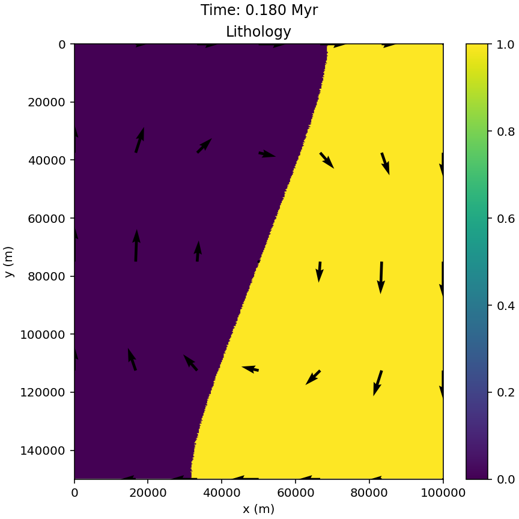

Getting Started¶
Prerequistes¶
This code requires Python 3.14 or higher (earlier versions may work but have not been tested), so if you haven’t already installed Python, do so before continuing.
The following guide assumes you are using the Anaconda distribution of Python (the one we use in this course). It also requires both git and a GitHub account, so make sure you have git installed and have made a GitHub account.
Forking the code¶
As you will already have seen, the code for this part of the course is stored in this repository. As part of your project, you will be making changes to this code, and it is possible that you will want to contribute these changes back to the main code in this repository.
Therefore, you will need to create a fork of this repository. Doing this will create a copy of this repository in your GitHub, which you can then work on and make changes to. If you develop changes that you think would be useful for the main code, you can then make a pull request from your fork to the central repository.
To create a fork, click on the ‘Fork’ button in the top-right of the repository home page. Make sure the Owner field is set to your GitHub username, then click ‘Create Fork’. This should then take you to your new forked version of the repository.
Cloning your newly forked repository¶
Now that you’ve created a fork, you need to clone it to your laptop in order to start working on it. We’ll do this through the command line, so start by opening the ‘Terminal’ (MacOS/Linux) or the Anaconda Prompt (Windows).
Navigate to the directory (folder) in which you want to store your code using
cd /path/you/want/to/store/code/in
If you are unsure about navigating in the terminal, this tutorial gives a quick introduction.
Copy the clone link from your forked repository by clicking on the green ‘Code’ button and copying the URL displayed there. Then in your terminal run the command
git clone URL-of-the-repository
Note
Make sure that you copy the URL of your fork, not the main repository, the URL should include your GitHub username.
You should now have a local version of your code. All that remains is to set up a python virtual environment and install the depdencies.
Setting up your conda environment¶
The required packages for this code are listed in the environment.yml file, which can be used to create a Python virtual environment and install these dependencies in it.
Using the terminal to create your environment¶
If you still have the terminal you used in the previous step open, navigate into the newly downloaded code file using
cd ./uu-mod-earth-systems
If not, open a terminal (on MacOS or Linux) or on Windows the anaconda_prompt app from the Anaconda Navigator and navigate to the directory with the code in using
cd /path/to/directory/on/your/computer/uu-mod-earth-systems
To create your new environment, run the command
conda env create -f environment.yml
This will create a conda environment called modearth-project, which you can then activate using the command
conda activate modearth-project
The terminal prompt should now display (modearth-project) in front of the entry field. You can then launch the spyder IDE in this environment by running
spyder
in this terminal. You can then develop and run models within this spyder instance.
Note
If you close this terminal, you will need to reactivate the environment when you open a new one before running the code!
Running an Example Model¶
Now that you have setup your environment, check that you can run one of the existing models. These are all found in the models folder. Each model has a folder, within the models folder, that contains three python files: run.py, setup.py and visualisation.py.
To run a model with it’s default settings, simply open the run.py in Spyder and press run. The output files will appear in a folder in the top level of the code folder called ‘Results’.
SimpleStokes¶
The SimpleStokes model is a simple test case, where the domain is split into two vertically and the
material on each side of the domain has a different density. To run the model, run the run.py file in the SimpleStokes directory.
The code includes plotting, for the default parameters you should see that a new folder Results/figures/SimpleStokes has
been created in the top level directory of the repository. You should see plot every two timesteps in there, showing that a
rotational flow is set up and the two different materials begin to overturn, as shown here
